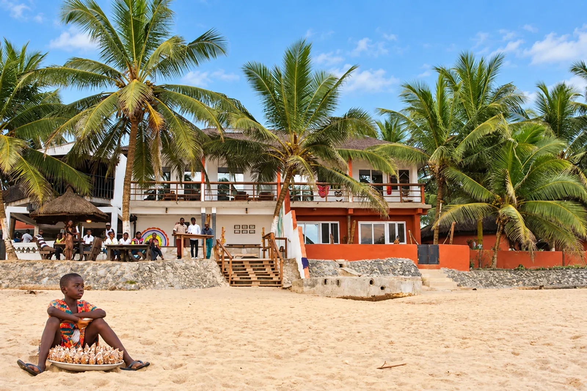

Nature & coast / Cape Coast
Cape Coast beachfront
Coastal scenery and fishing-community surroundings. Agree a specific beach or venue before planning a visit.
Plan my visit →
Palm trees and beachside buildings along the Cape Coast beachfront.
Download 8K upscaled photo ↗Your Cape Coast, your way
Make room for
what moves you.
Choose the places you want to see. Add your preferred date and pickup point, then review your proposed visit.
A plan, before a promise.
This preview saves your details in this browser session. It does not send a request or reserve a visit.